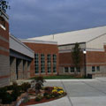

|  |
James J. McCann Recreational Center
Built in 1865
Office of the current College President |
The McCann Center is home to Marist College's intercollegiate, intramural, and recreational athletics programs. The original 57,200 square-foot McCann Center, including a field house, Olympic swimming pool, dance studio, and weight room, was built in 1977 with funding from the James J. McCann Foundation. The McCann Foundation again gave its support to construct a 20,000 square-foot addition that opened in 1997. The expansion features an 11,000 square-foot multipurpose gymnasium, a 4,300 square-foot weight training area, a 4,000 square-foot cardiovascular area, a student lounge and locker rooms, and the electronic Pepsi Athletic Hall of Fame, a multimedia room and computer lab honoring athletes and teams from Marist College and surrounding Dutchess County.
The McCann Center was named after James J. McCann, who was born in Poughkeepsie in 1880. He and his family operated the McCann Feed and Grain Store on Main Street, and McCann eventually amassed a large estate through the stock market. In 1967, two years before his death, McCann established the McCann Foundation, which began awarding money in 1969 for "progressive human welfare work."